글은 최소한만 읽고, 그림만 위에서 아래로 훑어도 전체가 이해되도록 만든 페이지입니다. main() 에서 출발해 mini_transformer.py 의 부품까지 내려갔다가, 다시 400번 반복 루프로 올라옵니다. 그림 속 모든 숫자는 실제로 코드를 돌려 얻은 값입니다.
파일 두 개, 함수 하나. 먼저 전체 지형을 봅니다.
def main():
# 1단계 DATA 6쌍 확인
# 2단계 질문/답 단어장 만들기
# 4단계 배치 → 모델 → 400에폭 학습 → 체크포인트 저장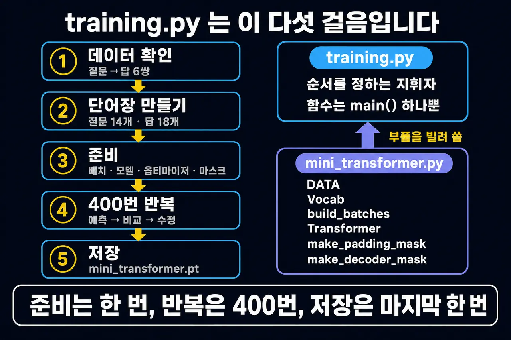
from mini_transformer import (
DATA, Transformer, Vocab, build_batches,
make_decoder_mask, make_padding_mask,
)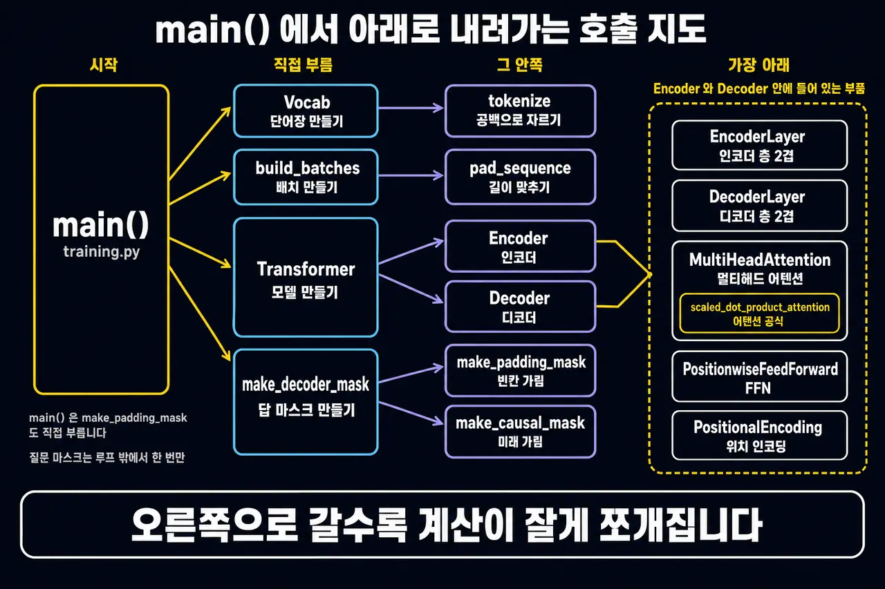
사람이 읽는 문장 6쌍이 모델이 먹을 수 있는 직사각형 텐서로 바뀝니다.
DATA = [
("하늘에 먹구름이 보이면 뭐가 생각나", "비가 올 것 같아"), # '먹구름' → '비'
("하늘에 별이 보이면 뭐가 생각나", "밤이 깊었나 봐"), # '별' → '밤'
# … 모두 6쌍
]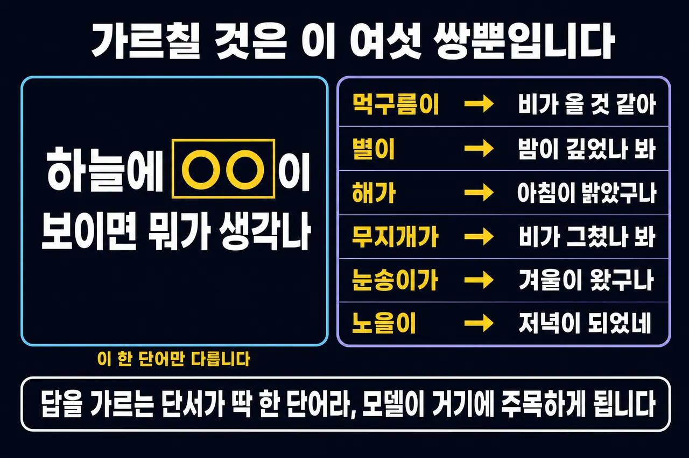
src_vocab = Vocab([q for q, _ in DATA]) # 질문 단어장 → 14개
tgt_vocab = Vocab([a for _, a in DATA]) # 답 단어장 → 18개
# Vocab.__init__ 안쪽
toks = sorted({t for s in sentences for t in tokenize(s)}) # 모으기→자르기→중복제거→정렬
self.itos = SPECIALS + toks # 번호 → 단어
self.stoi = {t: i for i, t in enumerate(self.itos)} # 단어 → 번호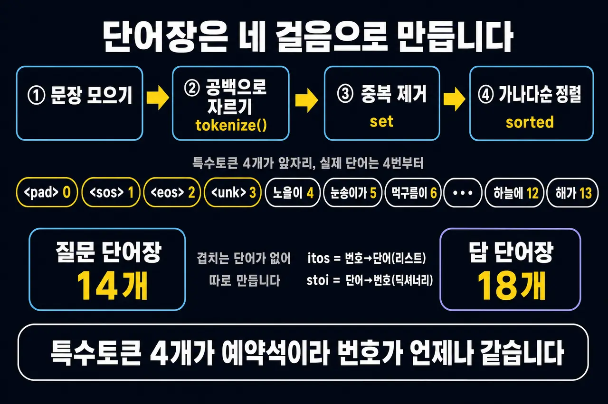
src = [torch.tensor(sv.encode(q, add_special=False)) for q, _ in pairs] # 질문: 특수토큰 없음
tgt = [torch.tensor(tv.encode(a, add_special=True)) for _, a in pairs] # 답: <sos>…<eos>
src = pad_sequence(src, batch_first=True, padding_value=sv.pad_id) # (6, 5)
tgt = pad_sequence(tgt, batch_first=True, padding_value=tv.pad_id) # (6, 6)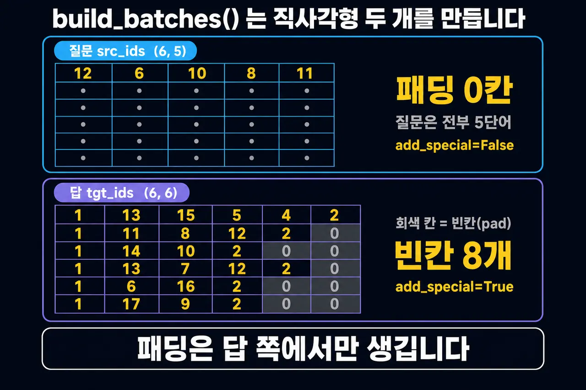
모델·채점표·수정기·짝짓기·마스크. 400번 반복 전에 한 번만 하는 일들입니다.
max_len = max(src_ids.size(1), tgt_ids.size(1), 20) + 2 # max(5, 6, 20) + 2 = 22
model = Transformer(len(src_vocab), len(tgt_vocab), max_len=max_len)
print("학습 대상 파라미터", sum(p.numel() for p in model.parameters()), "개")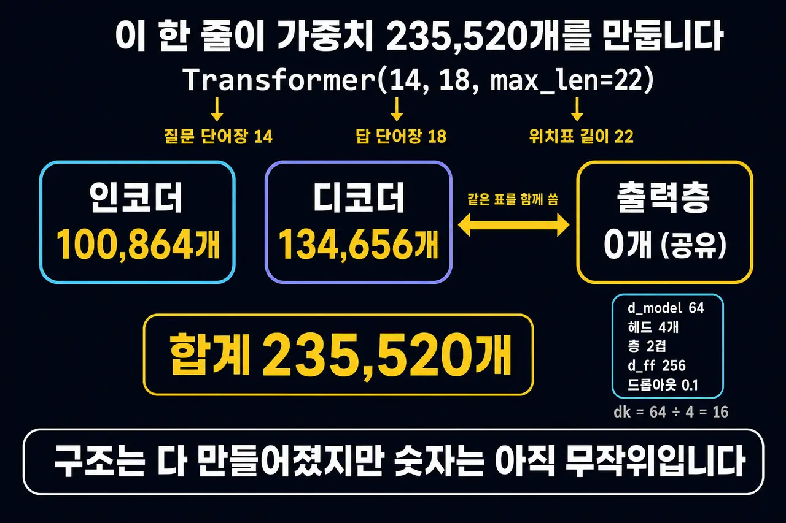
opt = torch.optim.Adam(model.parameters(), lr=3e-4) # 아주 조금씩 고치기
crit = nn.CrossEntropyLoss(ignore_index=tgt_vocab.pad_id) # <pad> 칸은 채점 제외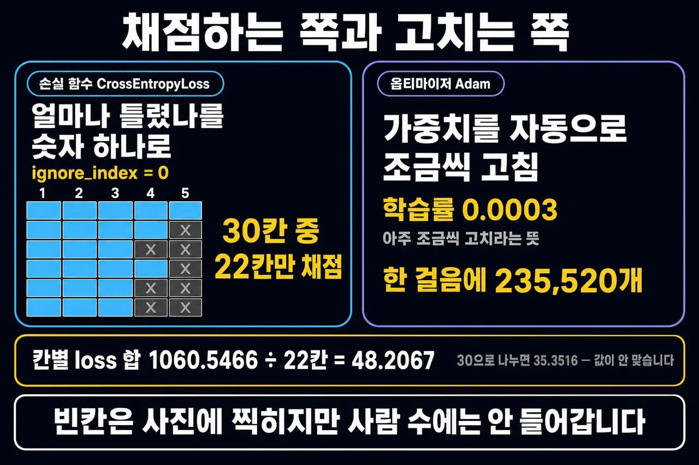
dec_in, dec_tgt = tgt_ids[:, :-1], tgt_ids[:, 1:] # (6,5) 와 (6,5)
# 0행: dec_in = [1, 13, 15, 5, 4] ← <sos> 비가 올 것 같아
# dec_tgt = [13, 15, 5, 4, 2] ← 비가 올 것 같아 <eos>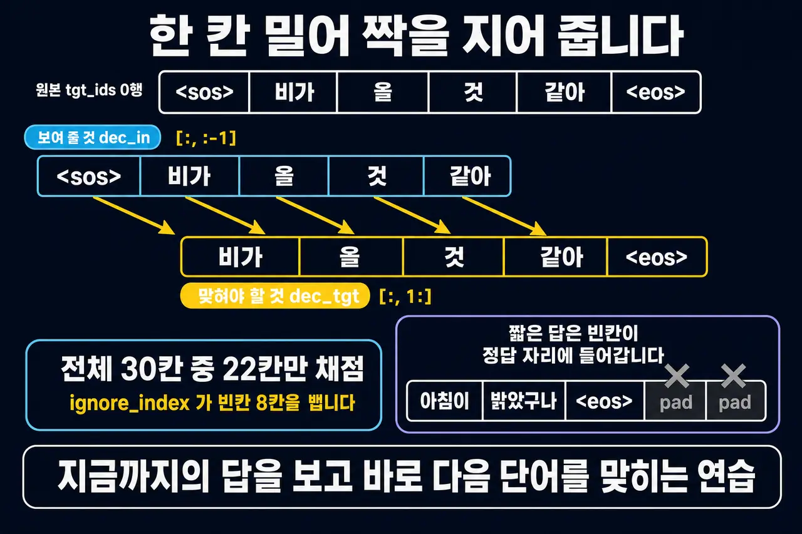
src_mask = make_padding_mask(src_ids, src_vocab.pad_id) # (6,1,1,5) — 루프 밖
for ep in range(1, 401):
tgt_mask = make_decoder_mask(dec_in, tgt_vocab.pad_id) # (6,1,5,5) — 루프 안
# make_decoder_mask = 패딩 마스크 AND 미래 가림 마스크
return make_padding_mask(tgt, pad_id) & make_causal_mask(tgt.size(1), tgt.device)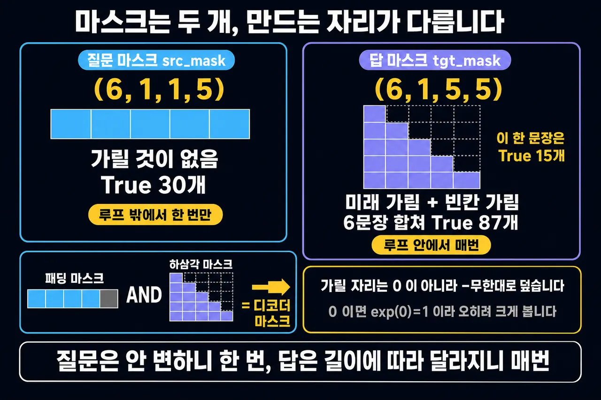
먼저 루프를 위에서 보고(10), 그다음 model(...) 한 줄을 계속 열어 봅니다(11→14). 마지막이 역전파(15)입니다.
for ep in range(1, 401):
tgt_mask = make_decoder_mask(dec_in, tgt_vocab.pad_id)
logits = model(src_ids, dec_in, src_mask, tgt_mask) # (1) 예측
loss = crit(logits.reshape(-1, logits.size(-1)), dec_tgt.reshape(-1)) # (2) 비교
opt.zero_grad(); loss.backward(); opt.step() # (3) 수정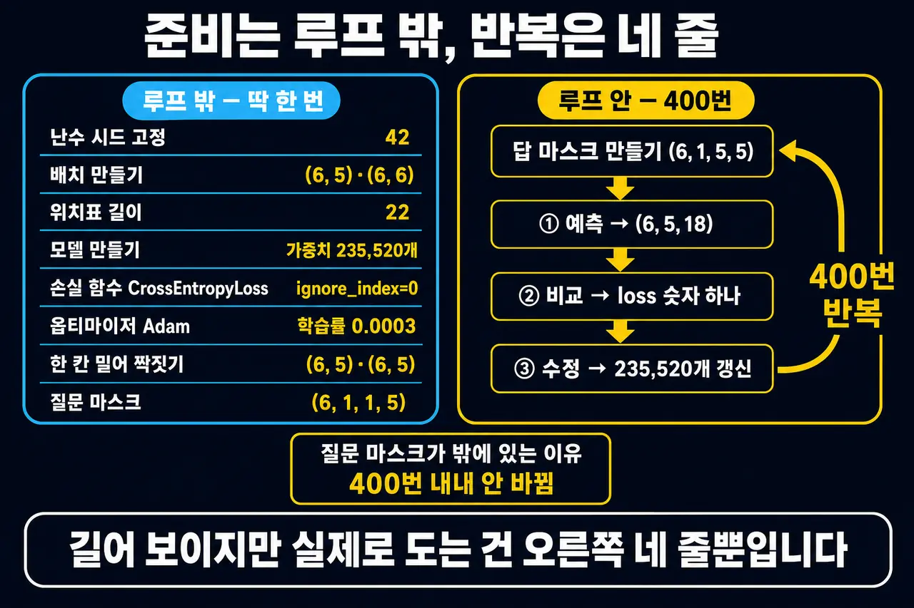
def forward(self, src, tgt, src_mask, tgt_mask):
return self.out(self.decoder(tgt, self.encoder(src, src_mask), tgt_mask, src_mask))
# (6,5) → 인코더 → (6,5,64) ┐
# (6,5) → 디코더 ←──────────┘ → (6,5,64) → 출력층 → (6,5,18)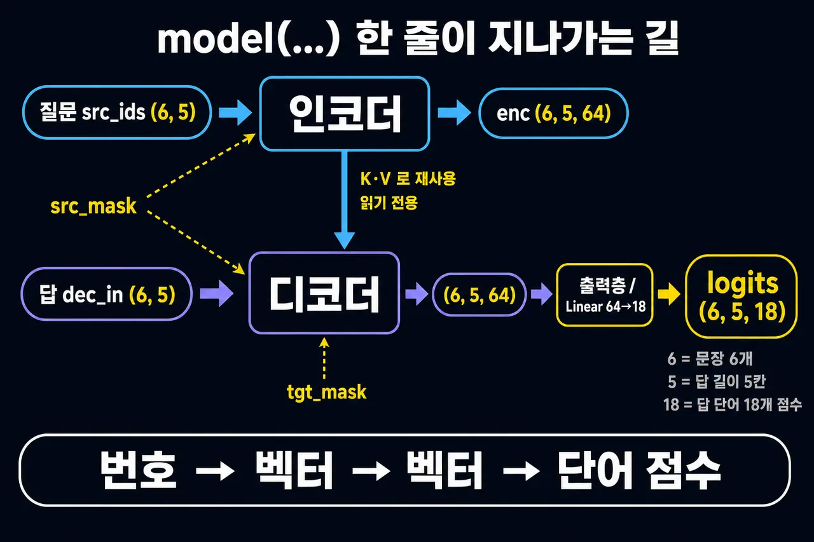
# Encoder.forward
x = self.pos(self.emb(src) * math.sqrt(self.d_model)) # √64 = 8 을 곱함
for l in self.layers: x = l(x, mask) # 앞 층 출력이 뒤 층 입력
# EncoderLayer.forward — 하위층 2개
x = self.n1(x + self.drop(self.attn(x, x, x, mask))) # 셀프어텐션 + 잔차 + 정규화
x = self.n2(x + self.drop(self.ffn(x))) # FFN + 잔차 + 정규화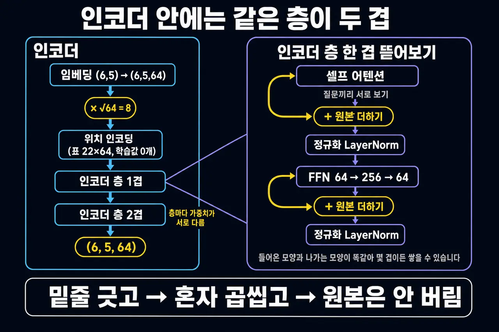
# DecoderLayer.forward — 하위층 3개
x = self.n1(x + self.drop(self.self_attn(x, x, x, tgt_mask))) # ① 미래 가림
x = self.n2(x + self.drop(self.cross_attn(x, enc, enc, src_mask))) # ② 질문 곁눈질
x = self.n3(x + self.drop(self.ffn(x))) # ③ 혼자 곱씹기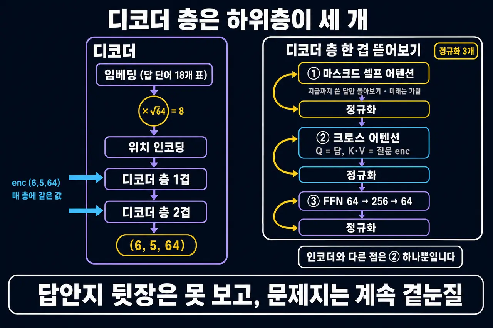
# MultiHeadAttention.forward
q, k, v = self.split(self.wq(q)), self.split(self.wk(k)), self.split(self.wv(v))
ctx, attn = scaled_dot_product_attention(q, k, v, mask, self.dropout)
return self.wo(self.merge(ctx))
# scaled_dot_product_attention — 학습되는 값 0개
scores = torch.matmul(q, k.transpose(-2, -1)) / math.sqrt(d_k)
scores = scores.masked_fill(mask == 0, float("-inf"))
attn = torch.softmax(scores, dim=-1)
return torch.matmul(attn, v), attn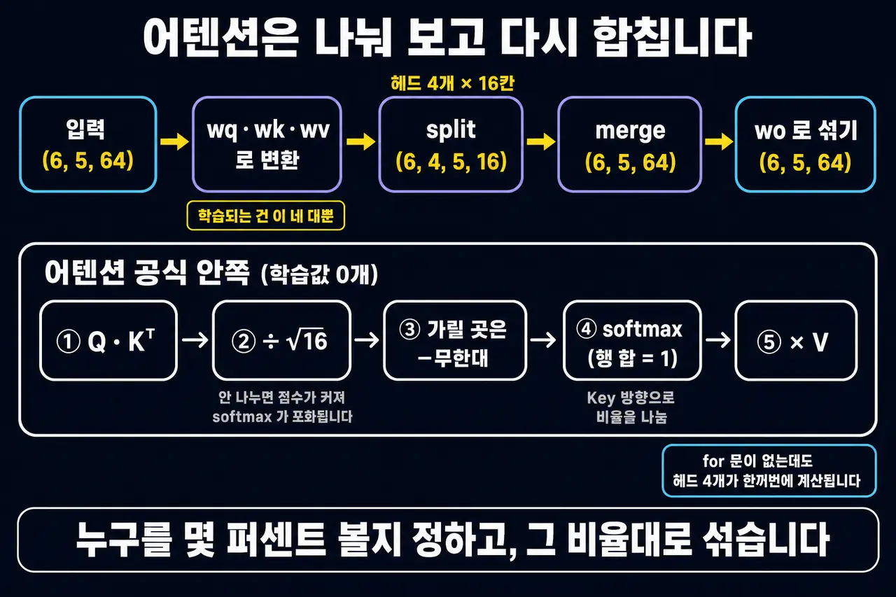
opt.zero_grad() # 지난 기울기 지우기 — 빼면 계속 더해져 엉뚱한 방향으로 갑니다
loss.backward() # 어느 방향으로 틀렸는지 계산
opt.step() # 그 반대 방향으로 한 걸음(0.0003 단위)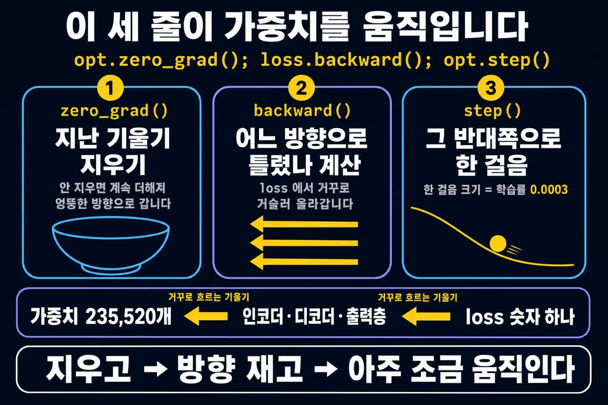
400번이 끝나면 loss 곡선 하나와 파일 하나가 남습니다.
if ep % 100 == 0 or ep == 1:
print(f"epoch {ep:4d} | loss {loss.item():.4f}")
assert loss.item() < 0.5 # 학습이 충분히 됐는지 확인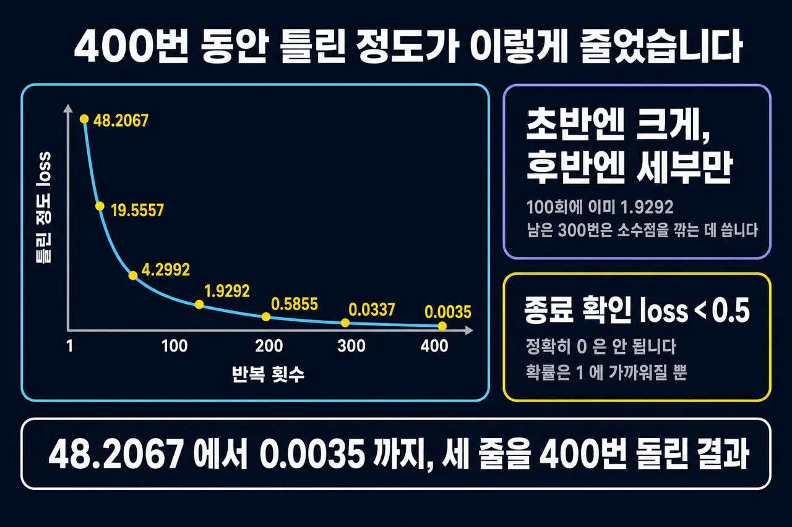
| 에폭 | loss | 에폭 | loss |
|---|---|---|---|
| 1 | 48.2067 | 100 | 1.9292 |
| 10 | 19.5557 | 200 | 0.5855 |
| 50 | 4.2992 | 300 | 0.0337 |
| — | — | 400 | 0.0035 |
torch.save({
"model_state": model.state_dict(), # 학습된 가중치 235,520개
"src_vocab": src_vocab, # 질문 단어장 14개
"tgt_vocab": tgt_vocab, # 답 단어장 18개
"max_len": max_len, # 22
"final_loss": loss.item(), # 0.0035
}, CKPT_PATH)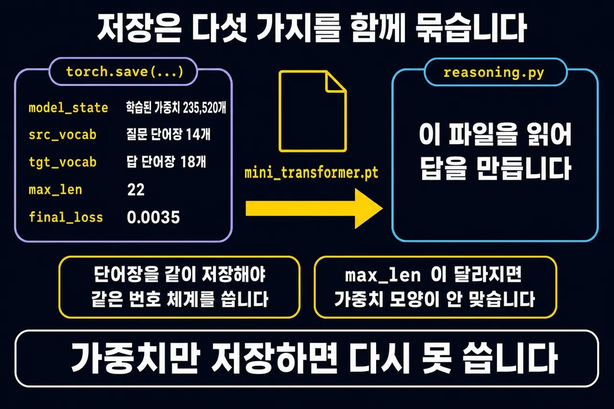
| 단계 | 코드 | 결과 (실측) |
|---|---|---|
| 데이터 | DATA | 6쌍 |
| 단어장 | Vocab(...) ×2 | 14 / 18 |
| 배치 | build_batches(...) | (6, 5) / (6, 6) |
| 위치표 길이 | max(5, 6, 20) + 2 | 22 |
| 모델 | Transformer(14, 18, max_len=22) | 235,520개 |
| 짝짓기 | tgt_ids[:, :-1] / [:, 1:] | (6, 5) / (6, 5) |
| 질문 마스크 | make_padding_mask(...) | (6, 1, 1, 5) |
| 답 마스크 | make_decoder_mask(...) | (6, 1, 5, 5) |
| 예측 | model(...) | (6, 5, 18) |
| 채점 칸 | ignore_index=0 | 30칸 중 22칸 |
| 1회차 loss | — | 48.2067 |
| 400회차 loss | — | 0.0035 |
| 저장 | torch.save(...) | 키 5개 |